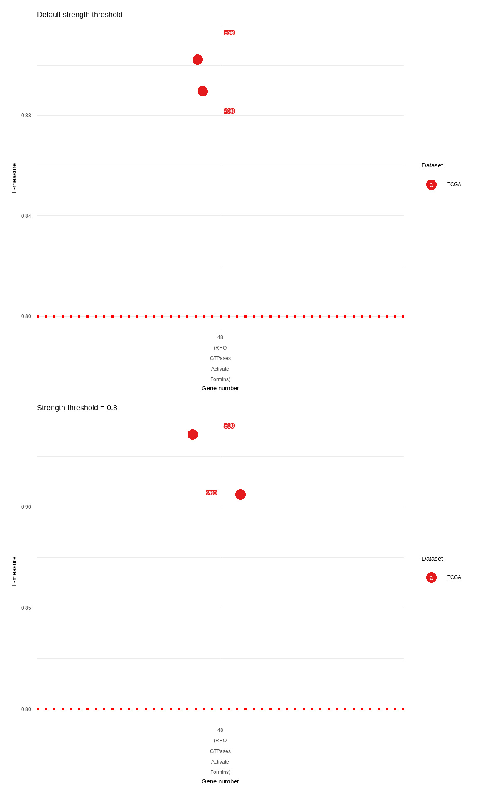
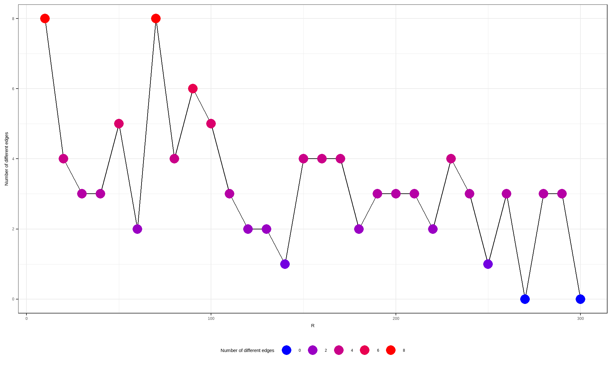
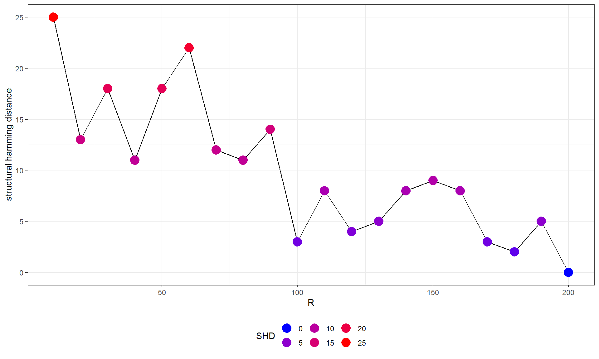

Chapter 7 Comparing networks
7.1 Comparing multiple networks
The inference including hundreds of genes should be interpreted with caution especially for the low bootstrap number. For assessing the network stability, the users can compare and output F-measure by the function compareBNs, which accepts the list of multiple networks (bn) and output the pairwise F-measures. In this analysis, We perform the inference five times for 100 and 500 bootstrap numbers in the specific reactome.
fvres <- c()
cl <- parallel::makeCluster(12)
for (R in c(200,500)){
n1 <- bngeneplot(pway, vstedTCGA, pathNum=13, returnNet=T, R=R, cl=cl)
n2 <- bngeneplot(pway, vstedTCGA, pathNum=13, returnNet=T, R=R, cl=cl)
n3 <- bngeneplot(pway, vstedTCGA, pathNum=13, returnNet=T, R=R, cl=cl)
n4 <- bngeneplot(pway, vstedTCGA, pathNum=13, returnNet=T, R=R, cl=cl)
n5 <- bngeneplot(pway, vstedTCGA, pathNum=13, returnNet=T, R=R, cl=cl)
geneNum <- length(n1$av$nodes)
nets <- list(n1$av, n2$av, n3$av, n4$av, n5$av)
igList <- list(as.igraph(n1$av), as.igraph(n2$av), as.igraph(n3$av), as.igraph(n4$av), as.igraph(n5$av))
allnets <- nets
fvalues <- compareBNs(nets)
fvres <- rbind(fvres, c("TCGA", 13, geneNum, R, "default", mean(fvalues), sd(fvalues)))
## Threshold 0.8
n1av <- averaged.network(n1$str, threshold=0.8)
n2av <- averaged.network(n2$str, threshold=0.8)
n3av <- averaged.network(n3$str, threshold=0.8)
n4av <- averaged.network(n4$str, threshold=0.8)
n5av <- averaged.network(n5$str, threshold=0.8)
nets <- list(n1av, n2av, n3av, n4av, n5av)
fvalues <- compareBNs(nets)
fvres <- rbind(fvres, c("TCGA", 13, geneNum, R, 0.8, mean(fvalues), sd(fvalues)))
}
resDF <- data.frame(fvres)
colnames(resDF) <- c("dataset","path_number","gene_number","R","threshold","mean","sd")
pathway_name <- sapply(resDF$path_number, function(x) pway@result$Description[as.numeric(x)])
resDF$label <- paste0(resDF$gene_number, "\n(", stringr::str_wrap(pathway_name,10),")")
parallel::stopCluster(cl)
kable(resDF)| dataset | path_number | gene_number | R | threshold | mean | sd | label |
|---|---|---|---|---|---|---|---|
| TCGA | 13 | 46 | 200 | default | 0.827838267450387 | 0.0142545029148593 | 46 (DNA Replication) |
| TCGA | 13 | 46 | 200 | 0.8 | 0.906049284397343 | 0.0115860045036512 | 46 (DNA Replication) |
| TCGA | 13 | 46 | 500 | default | 0.8891073295009 | 0.0166304765423583 | 46 (DNA Replication) |
| TCGA | 13 | 46 | 500 | 0.8 | 0.952442017928139 | 0.0130845995987744 | 46 (DNA Replication) |
Plot the result for the visual assessment.
defa <- resDF %>% filter(threshold=="default") %>%
ggplot(aes(x=label,
y=as.numeric(mean),
group=dataset,
color=dataset,
bg.color=dataset,
segment.color=dataset)
)+
geom_jitter(size=4, width=0.1) +
theme_minimal() +
geom_text_repel(aes(label = R),
color = "white", size=4,
bg.r = .15) +
scale_color_brewer(palette = "Set1",
name = "Dataset",
# The same color scall will apply to both of these aesthetics.
aesthetics = c("color","bg.color","segment.color"))+
geom_hline(yintercept=0.8, lty=3, color="red", size=1) +
xlab("Gene number") + ylab("F-measure") + ggtitle("Default strength threshold")
high <- resDF %>% filter(threshold=="0.8") %>%
ggplot(aes(x=label,
y=as.numeric(mean),
group=dataset,
color=dataset,
bg.color=dataset,
segment.color=dataset)
)+
geom_jitter(size=4, width=0.1) +
theme_minimal() +
geom_text_repel(aes(label = R),
color = "white", size=4,
bg.r = .15) +
scale_color_brewer(palette = "Set1",
name = "Dataset",
# The same color scall will apply to both of these aesthetics.
aesthetics = c("color","bg.color","segment.color"))+
geom_hline(yintercept=0.8, lty=3, color="red", size=1) +
xlab("Gene number") + ylab("F-measure") + ggtitle("Strength threshold = 0.8")
defa / high
Take the intersection of networks.
as.bn(Reduce(igraph::intersection, igList))FALSE
FALSE Random/Generated Bayesian network
FALSE
FALSE model:
FALSE [ORC1][ORC2][GINS2][GINS3][MCM10|ORC1][MCM2|ORC1:GINS2][CDC45|ORC1:GINS2]
FALSE [E2F3|GINS2][ORC4|ORC2][CDT1|ORC1:GINS2][CDC6|MCM10:CDC45][DNA2|MCM10]
FALSE [ORC5|ORC4][FEN1|MCM2:ORC1:GINS2][UBE2C|CDC45:CDT1][PRIM1|MCM2][RFC2|ORC5]
FALSE [GINS1|MCM10:UBE2C][PSMA7|DNA2:UBE2C][E2F1|MCM2:CDC45:CDT1:UBE2C]
FALSE [CCNA2|MCM10:ORC1:UBE2C][DBF4|GINS2:CCNA2]
FALSE [ORC6|RFC2:CDC45:GINS2:DNA2:UBE2C:PRIM1][POLD2|RFC2:ORC1:CCNA2]
FALSE [UBE2S|GINS1:FEN1:UBE2C][MCM8|MCM10:MCM2:GINS1:CDT1]
FALSE [POLE2|RFC2:GINS1:POLD2:UBE2S][PSMB5|RFC2:POLD2:UBE2S:FEN1]
FALSE [LIG1|E2F1:UBE2S:ORC2:MCM8][PSMA2|MCM2:UBE2S:ORC5][RFC3|ORC1:CDC6:POLD2]
FALSE [ANAPC1|DBF4:ORC1:E2F1:ORC2][PSMD4|DBF4:RFC2:UBE2S]
FALSE [PSMD14|ORC1:PSMB5:PSMA7:PSMA2:ORC2:ORC4][MCM7|RFC2:E2F1:LIG1:E2F3:ORC5:CDT1]
FALSE [CCNE2|CDC45:POLE2:E2F1:MCM8:GINS2:CCNA2][POLE|E2F1:RFC3:DNA2:CDT1]
FALSE [RFC5|ORC6:LIG1:POLE:PRIM1][PCNA|RFC2:GINS1:MCM8:CDT1:CCNE2]
FALSE [MCM4|MCM2:ORC1:PCNA]
FALSE [PSMA6|POLE2:PSMB5:E2F1:MCM4:UBE2S:PSMD14:CCNA2:ANAPC1:PSMD4:PRIM1]
FALSE [GINS4|MCM10:ORC1:ORC6:MCM4:E2F3:RFC3:ORC5][RFC4|MCM2:MCM4:UBE2C]
FALSE [CCNE1|ORC6:CDC6:E2F1:E2F3:ORC4:PSMD4:RFC4][SKP2|GINS1:PSMA7:MCM4:CCNE1]
FALSE [PRIM2|PSMA6:E2F3:SKP2:PRIM1]
FALSE nodes: 46
FALSE arcs: 143
FALSE undirected arcs: 0
FALSE directed arcs: 143
FALSE average markov blanket size: 14.43
FALSE average neighbourhood size: 6.22
FALSE average branching factor: 3.11
FALSE
FALSE generation algorithm: EmptyThe same can be done for bnpathplot.
cl <- parallel::makeCluster(12)
n1 <- bnpathplot(pway, vstedTCGA, nCategory = 15, returnNet=T, R=200, cl=cl)
n2 <- bnpathplot(pway, vstedTCGA, nCategory = 15, returnNet=T, R=200, cl=cl)
n3 <- bnpathplot(pway, vstedTCGA, nCategory = 15, returnNet=T, R=200, cl=cl)
n4 <- bnpathplot(pway, vstedTCGA, nCategory = 15, returnNet=T, R=200, cl=cl)
n5 <- bnpathplot(pway, vstedTCGA, nCategory = 15, returnNet=T, R=200, cl=cl)
nets <- list(n1$av, n2$av, n3$av, n4$av, n5$av)
fvalues <- compareBNs(nets)
mean(fvalues)FALSE [1] 0.9173784parallel::stopCluster(cl)7.2 Testing R
We provide the diagnostic function of inferred network across multiple bootstrap numbers. We can test how R values affect the resulting network. It is very time consuming to test many genes, thus the setting up cl argument using library parallel is suggested. We can specify which scoring function to use by scoreType. Additionally, returned strength data frame as well as raw data frame can be used to assess various metrics and thresholds like structural hamming distance.
cl <- parallel::makeCluster(6)
pathTest <- bnpathtest(results = pway, algo="hc",
exp = vsted, Rrange = seq(10, 300, 10), nCategory = 15,
expSample = incSample,
expRow = "ENSEMBL", cl = cl)
# Plot
difEdges <- sapply(pathTest$graph, function(x) sapply(pathTest$graph, function(y) length(E(difference(as.igraph(x), as.igraph(y))))))
difEdges <- data.frame(difEdges[dim(difEdges)[1], colnames(difEdges)])
colnames(difEdges) <- c("NumDif")
ggplot(difEdges, aes(x=as.numeric(substring(rownames(difEdges), 2)), y=NumDif)) +
geom_line(group=1)+
geom_point(aes(color=NumDif), size=5)+
scale_color_gradient(low = "blue", high = "red", name="Number of different edges", guide = guide_legend())+
theme_bw()+xlab("R")+ylab("Number of different edges")+
theme(legend.position="bottom")
parallel::stopCluster(cl)## Which pathway?
paste(pway@result[15,]$Description, pway@result[15,]$Count)FALSE [1] "Homologous DNA Pairing and Strand Exchange 22"## From 10 to 200
cl = makeCluster(6)
geneTest <- bngenetest(results = pway, algo="hc", pathNum=15,
exp = vsted, Rrange=seq(10, 200, 10),
expSample = incSample,
expRow = "ENSEMBL", cl = cl)
difSHD <- sapply(geneTest$graph, function(x) sapply(geneTest$graph, function(y) shd(x, y)))
# Plot SHD compared to the highest R network
difSHD <- data.frame(difSHD[dim(difSHD)[1], colnames(difSHD)])
colnames(difSHD) <- c("SHD")
ggplot(difSHD, aes(x=as.numeric(substring(rownames(difSHD), 2)), y=SHD)) +
geom_line(group=1)+
geom_point(aes(color=SHD), size=5)+
scale_color_gradient(low = "blue", high = "red", name="SHD", guide = guide_legend())+
theme_bw()+xlab("R")+ylab("structural hamming distance")+
theme(legend.position="bottom")
parallel::stopCluster(cl)